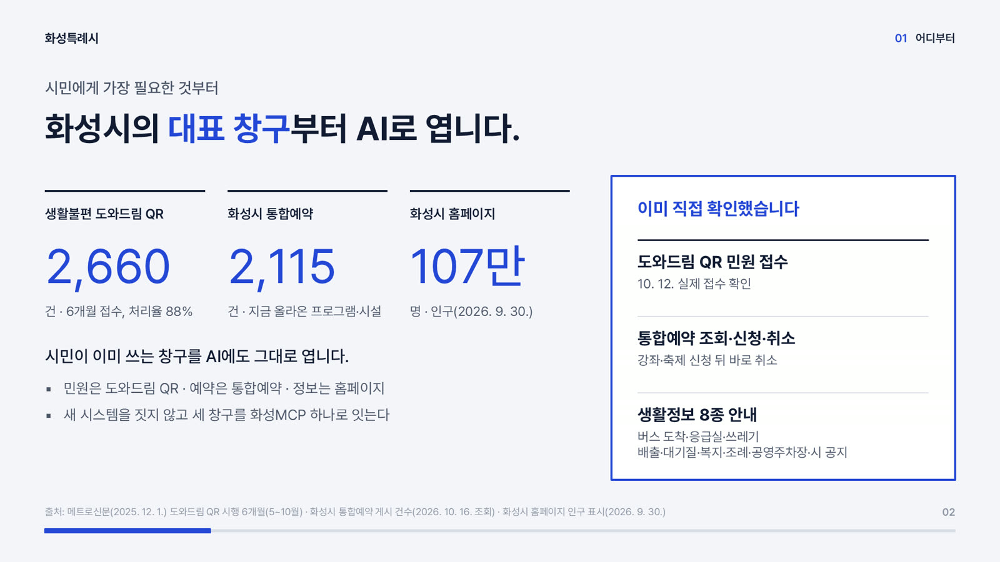

말 대신 아래 눌러서 말하기 단추를 누르면 준비된 대화가 차례로 재생됩니다.
2026년 10월 화성MCP 시험 실행 기록으로 만든 예시 대화입니다.
화성MCP를 소개하는 자료 6장입니다.

행정을 찾는 방식이 시청에서 홈페이지로 그리고 AI로 바뀝니다.
시험 실행 기록을 휴대폰 화면으로 재현했습니다.
화성MCP를 연결하면 실제로 민원 접수와 통합예약이 됩니다.
찾아가서 기다립니다.
메뉴를 찾아 들어갑니다.
말하면 AI가 대신 찾고 신청합니다.
2024년 11월 Anthropic이 공개한 연결 규격으로 여러 AI 회사가 함께 씁니다. 한 번 맞춰 두면 어느 AI든 화성시에 꽂아 씁니다.
지금은 세 창구로 시작하고 앞으로 화성시의 모든 창구가 같은 길로 이어집니다.
"주말에 화성시에 갈 만한 데 있어?"
쓰던 AI 그대로입니다.
AI와 화성시 시스템을 잇습니다.
도와드림 QR · 통합예약 · 공공 정보
2026년 10월 12일 클로드로 넣은 민원이 도와드림 QR을 통해 실제로 접수되었습니다.
통합예약시스템에서 남은 자리 확인부터 신청·취소까지 합니다.
출처와 받은 시각을 함께 붙입니다.
내용을 보여 주고 동의받은 뒤에만 신청합니다.
접수자 정보를 화성MCP 서버에 남기지 않습니다.
이미 열린 정보와 서비스만 씁니다.
도와드림 QR · 통합예약 · 생활정보 시범 공개가 목표입니다.
부서 서비스와 공무원이 만든 AI 도구를 등록합니다.
시 서비스 전체를 화성MCP로 묶습니다.
행정안전부는 2026년 9월 행정서비스를 API·MCP로 제공하겠다는 목표를 밝혔고 한국지능정보사회진흥원은 12월까지 MCP 검증 기준을 마련하고 있습니다.
시범 공개를 준비 중입니다. 공개되면 AI 앱 연결 설정에 주소 한 줄만 넣으면 됩니다.
아닙니다. 웹에서 바로 쓰는 화성MCP와 홈페이지 연결도 함께 준비합니다.
신청과 접수 전에 전체 내용을 보여 주고 동의를 받습니다.
ChatGPT · Claude · Gemini 등 MCP를 지원하는 AI라면 같은 방식으로 씁니다.
대표 창구부터 시작해 화성시 모든 서비스를 AI로 잇습니다.
시민의 AI가 찾아오는 시청 창구, 화성MCP